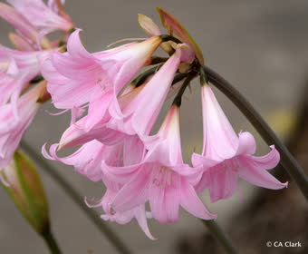

อัตราส่วนประกอบ
1 ส่วน

ใบมะกา
รสยา: ใบ — รสขมขื่น
สรรพคุณ: ใบ — ถ่ายเสมหะและโลหิต ถ่ายพิษตานซางเด็ก ชัดลมขึ้นเบื้องสูงให้ลงต่ำ
สรรพคุณ: ใบ — ถ่ายเสมหะและโลหิต ถ่ายพิษตานซางเด็ก ชัดลมขึ้นเบื้องสูงให้ลงต่ำ
.jpg)
ใบมะขาม
สรรพคุณ: เนื้อฝักแก่ รสเปรี้ยว เป็นยาระบาย ขับเสมหะ , เนื้อเมล็ดมะขามรสมัน ใช้ขับพยาธิ

ใบส้มป่อย
รสยา: ใบ — รสเปรี้ยวฝาดเล็กน้อย
สรรพคุณ: ใบ — ถ่ายเสมหะ ล้างเมือกมันในลำไส้ แก้บิด ฟอกล้างโลหิตระดู ประคบให้เส้นเอ็นอ่อน
สรรพคุณ: ใบ — ถ่ายเสมหะ ล้างเมือกมันในลำไส้ แก้บิด ฟอกล้างโลหิตระดู ประคบให้เส้นเอ็นอ่อน


.jpg)
ฝักคูน
รสยา: เนื้อในฝัก — รสหวานเอียน
สรรพคุณ: เนื้อในฝัก — ระบายท้อง ช่วยบรรเทาการแน่นหน้าอก ฟกช้ำ แก้ลมเข้าข้อและขัดข้อ
สรรพคุณ: เนื้อในฝัก — ระบายท้อง ช่วยบรรเทาการแน่นหน้าอก ฟกช้ำ แก้ลมเข้าข้อและขัดข้อ

รากขี้กาแดง
รสยา: ลูก — รสขมจัด
สรรพคุณ: ลูก — บำรุงน้ำดี แก้พิษเสมหะและโลหิต ถ่ายและล้างโทษเสมหะ และอุจจาระให้ตก
สรรพคุณ: ลูก — บำรุงน้ำดี แก้พิษเสมหะและโลหิต ถ่ายและล้างโทษเสมหะ และอุจจาระให้ตก

รากขี้กาขาว
รสยา: เถา — รสขม
สรรพคุณ: เถา — บำรุงน้ำดี ดับพิษ เสมหะและโลหิต
สรรพคุณ: เถา — บำรุงน้ำดี ดับพิษ เสมหะและโลหิต

รากตองแตก
รสยา: ราก — รสจืดเฝื่อนขมน้อย
สรรพคุณ: ราก — ระบายอ่อนๆ ถ่ายลมถ่ายเสมหะ ไม่ไซ้ท้อง
สรรพคุณ: ราก — ระบายอ่อนๆ ถ่ายลมถ่ายเสมหะ ไม่ไซ้ท้อง

เถาวัลย์เปรียง
รสยา: เถา — รสเบื่อเอียน
สรรพคุณ: เถา — ถ่ายเส้น ถ่ายกระษัย แก้เส้นเอ็นขอด เส้นตึง แก้ปวดเมื่อย ทำให้เส้นเอ็นหย่อน ขับปัสสาวะ ถ่ายเสหะลงสู่คูทวาร
สรรพคุณ: เถา — ถ่ายเส้น ถ่ายกระษัย แก้เส้นเอ็นขอด เส้นตึง แก้ปวดเมื่อย ทำให้เส้นเอ็นหย่อน ขับปัสสาวะ ถ่ายเสหะลงสู่คูทวาร

หัวหอม
รสยา: ไส้ในลูก — รสฝาดหอมหวาน
สรรพคุณ: ไส้ในลูก — แก้ตกเลือดทางทวารเบาของสตรี กินแล้วทำให้เลือดหยุด
สรรพคุณ: ไส้ในลูก — แก้ตกเลือดทางทวารเบาของสตรี กินแล้วทำให้เลือดหยุด
ฝักส้มป่อย
รสยา: ใบ — รสเปรี้ยวฝาดเล็กน้อย
สรรพคุณ: ใบ — ถ่ายเสมหะ ล้างเมือกมันในลำไส้ แก้บิด ฟอกล้างโลหิตระดู ประคบให้เส้นเอ็นอ่อน
สรรพคุณ: ใบ — ถ่ายเสมหะ ล้างเมือกมันในลำไส้ แก้บิด ฟอกล้างโลหิตระดู ประคบให้เส้นเอ็นอ่อน

สมอไทย
รสยา: ผล — รสฝาดติดเปรี้ยว
สรรพคุณ: ผล — ระบายอ่อนๆ แก้ลมป่วง แก้พิษร้อนภายใน คุมธาตุแก้ลมจุกเสียด รู้ผายธาตุ รู้ระบายรู้ถ่ายอุจจาระ ถ่ายพิษไข้ คุมธาตุในตัวเสร็จ แก้ไข้เพื่อเสม
สรรพคุณ: ผล — ระบายอ่อนๆ แก้ลมป่วง แก้พิษร้อนภายใน คุมธาตุแก้ลมจุกเสียด รู้ผายธาตุ รู้ระบายรู้ถ่ายอุจจาระ ถ่ายพิษไข้ คุมธาตุในตัวเสร็จ แก้ไข้เพื่อเสม

สมอดีง
รสยา: ผล — รสขมฝาด
สรรพคุณ: ผล — แก้พิษดี พิษโลหิต แก้ไอ ขับถ่ายโลหิตระดูสตรี ถ่ายระบายอุจจาระแรงกว่าสมอชนิดอื่นมาก
สรรพคุณ: ผล — แก้พิษดี พิษโลหิต แก้ไอ ขับถ่ายโลหิตระดูสตรี ถ่ายระบายอุจจาระแรงกว่าสมอชนิดอื่นมาก

4 ส่วน

ยาดำ
รสยา: รสเหม็นขมจัด
สรรพคุณ: ถ่ายท้อง ถ่ายพิษไข้ ถ่ายพยาธิไส้เดือน ตัวตืด ขับน้ำดี แต่ไซ้ท้อง ฝนกับสุราทาหัวฝี แก้อาการฟกบวม
สรรพคุณ: ถ่ายท้อง ถ่ายพิษไข้ ถ่ายพยาธิไส้เดือน ตัวตืด ขับน้ำดี แต่ไซ้ท้อง ฝนกับสุราทาหัวฝี แก้อาการฟกบวม
20 ส่วน


สรรพคุณ
- แก้ท้องผูก
การใช้งาน
- วิธีทำ: เม็ด = เม็ดละ 0.5 กรัม / แคปซูล = แคปซูลละ 0.5 กรัม
- รับประทานวันละ 1 ครั้ง ก่อนนอน
- ชนิดเม็ด: ผู้ใหญ่ ครั้งละ 2–5 เม็ด ตามธาตุหนักเบา
- ชนิดแคปซูล: ผู้ใหญ่ ครั้งละ 2–5 แคปซูล ตามธาตุหนักเบา
บรรจุภัณฑ์
- เม็ด ไม่เกิน 10 เม็ด
- แคปซูล ไม่เกิน 10 แคปซูล